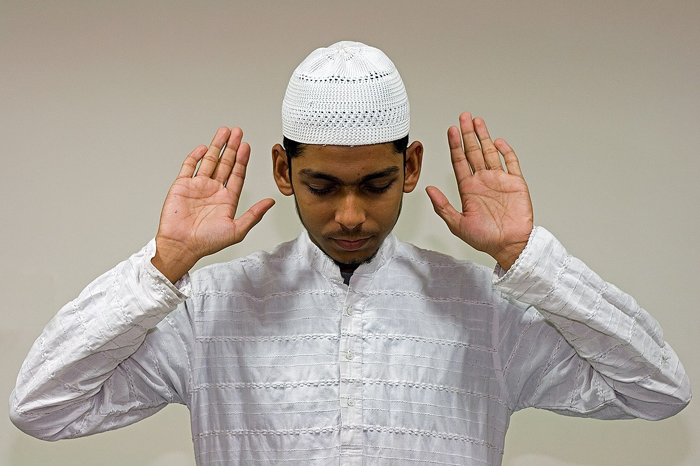
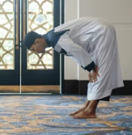
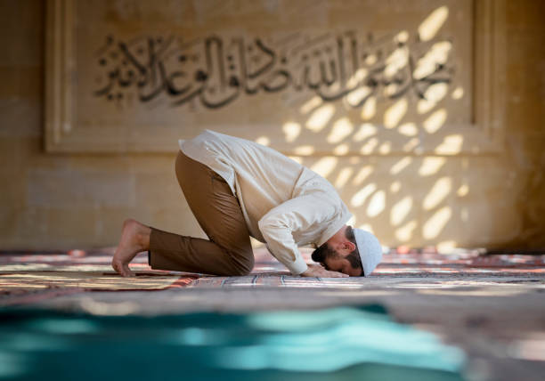
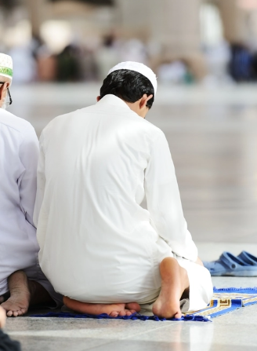
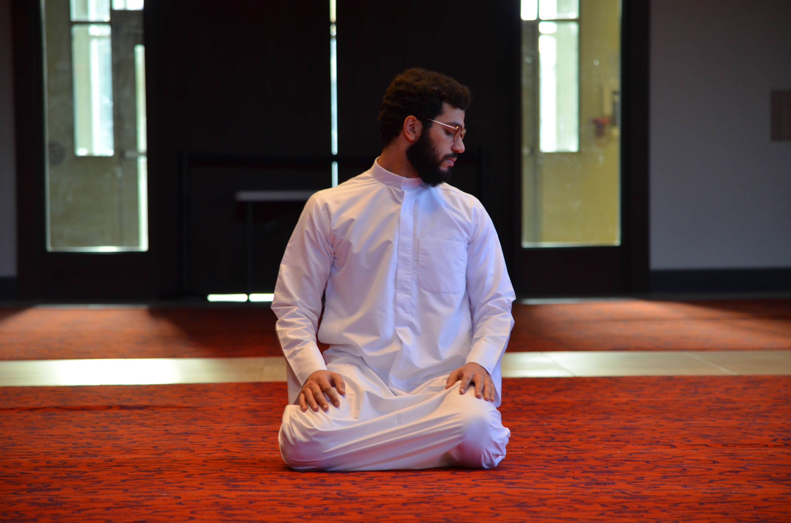

STEP 1 TAKBEERMake the Intention of your Salah in your heart or verbally, then raise your hands with your fingers spaced out, next to your ears, and say Allahu Akbar which means God Is Great

STEP 2 QIYAMThen place your hands below the naval, the right hand over the left and say Dua Al Istiftah(only for the first rakat)سُبْحَانَكَ اللَّهُمَّ وَبِحَمْدِكَ وَتَبَارَكَ اسْمُكَ وَتَعَالَى جَدُّكَ وَلاَ إِلَهَ غَيْرُكَThen recite Surah Faitha along with any other Surah or three verses of any other SurahSTEP 3 RUKUSay Allahu Akbar and bow down and grip the knees, keep your back straight and recite "Subhaana Rabbiyal-A'theem" 3 times

سُبْحَانَ رَبِّيَ الْعَظِيم (Glory be to my Lord)STEP 4 QAUMAHStand back up keeping the hands by your side and say Sami Allahu liman hamidahسَمِعَ اللهُ لِمَنْ حَمِدَهُ (Allah hears those who praise Him)Then say Rabbana wa lakal-hamdرَبَّنَا وَلَكَ الْحَمْدُ (O Allah praise is for you)STEP 5 SAJDAHSay Allahu Akbar and prostrate down. Your nose, forhead, hands, knees, and toes should be tocuhing the floor and keep your elbos and forearms high. Then recite Subhana Rabbiyal A'la 3 times.

سُبْحَانَ رَبِّيَ الاأَعْلَ (Glory to my Lord, The High)STEP 6 JALSAHSay Allahu Akbar and go to a sitting position with your hands on your thighs and then repeat step 5

Then depending on how many rakats you need to perform you repeat steps 1 to 6 that many times.STEP 7 QA'DAHWhen you are on your 2nd Rakat you need to recite Tashah-hud while in the Jalsah position. When you read the word Laa raise your pointer finger of your right hand and drop it when you recite Illallaahٱلتَّحِيَّاتُ لِلَّٰهِ وَٱلصَّلَوَاتُ وَٱلطَّيِّبَاتُ، ٱلسَّلَامُ عَلَيْكَ أَيُّهَا ٱلنَّبِيُّ وَرَحْمَةُ ٱللَّٰهِ وَبَرَكَاتُهُ، ٱلسَّلَامُعَلَيْنَا وَعَلَىٰ عِبَادِ ٱللَّٰهِ ٱلصَّالِحِينَ، أَشْهَدُ أَنْ لَا إِلَٰهَ إِلَّا ٱللَّٰهُ، وَأَشْهَدُ أَنَّ مُحَمَّدًا عَبْدُهُ وَرَسُولُهُ.(All the compliments are for Allah and all the prayers and all the good things (are for Allah). Peace be on you, O Prophet, and Allah's mercy and blessings (are on you). And peace be on us and on the good (pious) worshipers of Allah. I testify that none has the right to be worshipped but Allah and that Muhammad is His slave and Apostle.)If you are doing either 3 or 4 rakat then after this repeat steps 1 to 7 but dont read another surah only surah Fatiha. If you are doing 2 rakats you don't need to repeat just continue. After you have done the amount of rakats you need to do, then sit back down in Jalsah and recite the Darood Ibraaheem after you have recited Tashah-hud for the final rakat. But if you only have 2 rakats then you don't need to say the Tashah-hud again becuase you already did it above.اللَّهُمَّ صَلِّ عَلَى مُحَمَّدٍ وَعَلَى آلِ مُحَمَّدٍ كَمَا صَلَّيْتَ عَلَى إِبْرَاهِيمَ وَعَلَى آلِ إِبْرَاهِيمَ، إِنَّكَ حَمِيدٌ مَجِيدٌ،اللَّهُمَّ بَارِكَ عَلَى مُحَمَّدٍ وَعَلَى آلِ مُحَمَّدٍ كَمَ ا بَارَكْتَ عَلَى إِبْرَاهِيمَ وَعَلَى آلِ إِبْرَاهِيمَ، إِنَّكَ حَمِيدٌ مَجِيدٌ(O Allah, bestow Your favor on Muhammad and on the family of Muhammad as You have bestowed Your favor on Ibrahim and on the family of Ibrahim, You are Praiseworthy, Most Glorious. O Allah, bless Muhammad and the family of Muhammad as You have blessed Ibrahim and the family of Ibrahim, You are Praiseworthy, Most Glorious.)Then recite this final Duaرَبِّ اجْعَلْنِي مُقِيمَ الصَّلَاةِ وَمِنْ ذُرِّيَّتِي ۚ رَبَّنَا وَتَقَبَّلْ دُعَاءِ رَبَّنَا اغْفِرْ لِيوَلِوَالِدَيَّ وَلِلْمُؤْمِنِينَ يَوْمَ يَقُومُ الْحِسَابُ(My Lord, make me an establisher of prayer, and [many] from my descendants. Our Lord, accept my prayer. Our Lord, forgive me and my parents and the believers on the Day of Judgement)STEP 8 SALAMTurn to the right while say Assalamu Alaikum Wa Rahmatullah Then turn to the left while saying Assalamu Alaikum Wa Rahmatullahاَلسَلامُ عَلَيْكُم وَرَحْمَةُ اَللهِ (May the peace and mercy of Allah be with you)

**Prophet Muhammed(SAW) said: “Whoever recites Ayat al-Kursi at the end of every obligatory prayer, nothing but death will prevent him from entering Paradise.” [An-Nasa'i]**